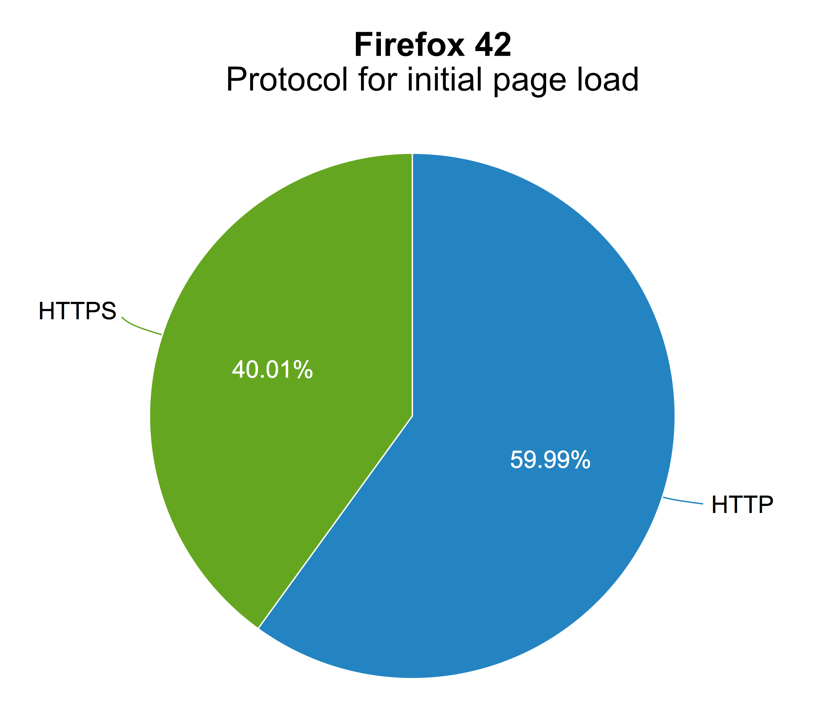
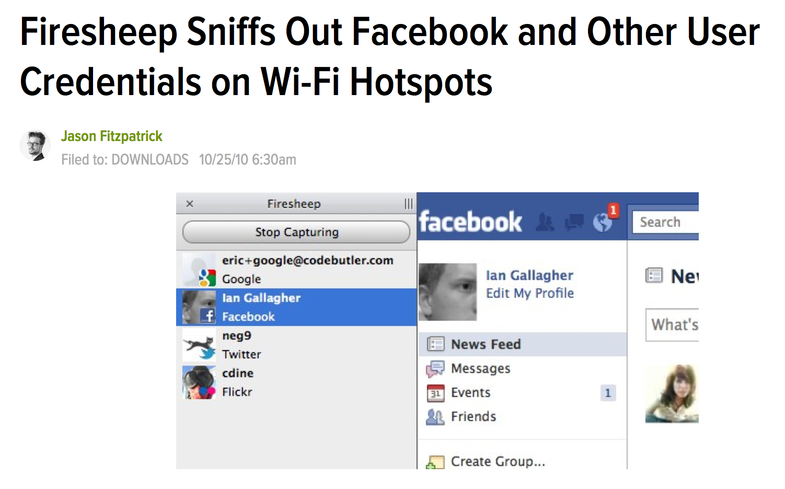
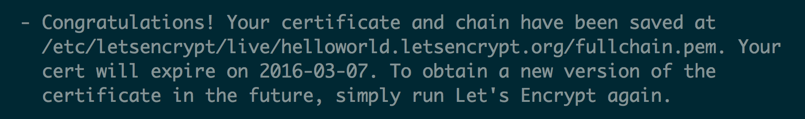
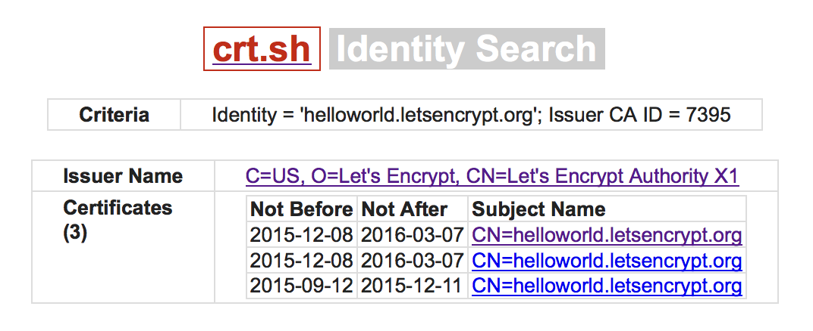
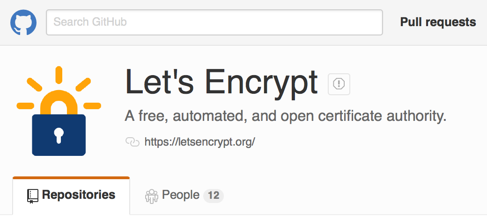
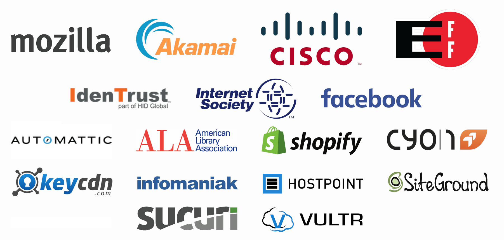
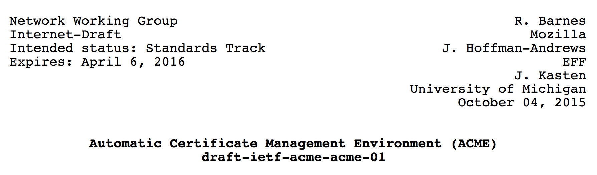

A Moment of Historic Reflection

- In 1995, Netscape released a browser with HTTPS
- For the first time, everyone had easy access to encrypted communications
20 Years Later

- Not enough HTTPS on the Internet
Security is Important
- Confidentiality: Prevent spying on what you're doing
- Integrity: Prevent injected advertising or tracking cookies
- Authenticity: Ensure you're talking to the real site and not part of a DDoS or being served malware
Getting a Certificate is Hard

- Manual process, different for every provider
- First you have to request a certificate…
- …then you have to figure out how to install it
Why is This So Hard?
- Certificates are required to set up a secure website
- The entities selling them want to make money
- This leads to things being expensive, difficult, and proprietary
is a new certificate authority
A Free CA

Things that don't matter:
- Ability to pay
- Where you reside
- Individual, organization, or corporation
An Automated CA
- Most of the work in issuing a certificate is in verifying domain control
- Let's Encrypt uses a standard protocol to verify domain control automatically prior to certificate generation
- Certificate renewals use this same process
Automated Certificate Management Environment (ACME)
- Suppose someone asks for a certificate for example.com
- How do you know they actually own example.com?
Domain Validation
Give them a challenge that only
the domain owner can complete:
- Provision a DNS record for
_acme-challenge.example.com - Provision a file at
http://example.com/.well-known/acme-challenge/ - Configure a TLS server on example.com
Automated Validation
- The whole process is laid out in the ACME specification
- How you ask for authorization
- How you fulfill challenges
- How you ask for certificates
- Having a standard protocol means that you can build tools
- The vision is for ACME to be built into web servers, to auto-configure HTTPS
A Transparent CA
All certificates are publicly logged through
the Certificate Transparency system
An Open CA
Everything Let's Encrypt uses is open source:
- The software that runs the certificate authority
- The software you use to get a certificate
- Even this presentation!
Pull requests welcome!
A Cooperative CA
- Wide industry sponsorship
- Community development and support
- Built on an open standard for all CAs
Platform Integration
An Upcoming Standard
- The ACME protocol is in the process being standardized by the IETF so that it can be used by all CAs
- Help for users is provided by an open community support system
The Future
Hundreds of Thousands of Certificates and Counting

Only the Beginning…
- General availability began December 3, 2015 and is already the 5th largest issuer of certificates
- Get every website using HTTPS
- Secure all the internet: email, chat, and more!